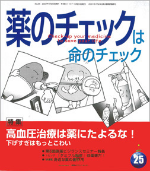

No.25 特集 高血圧治療は薬にたよるな！ 2007年1月 発行
 下げすぎはもっとこわい２００６年１０月２１日と２２日の２日間、大阪市北区の関西大学天六キャンパスで第５回医薬ビジランスセミナーを開催しました。
テーマは「科学的根拠に基づいたインフォームド・コンセントのために―薬づくり・情報づくり・病人づくりを知ろう！」です。
基調講演で、議論の前提として、「病気」とは何か、「健康」とは何かを考えるために必要な大切なことについて触れました。
そして初日の午後は、フランスから招いたクリストフ・コップ医師から、「WHOよ、おまえもか！」ともいうべき、おどろくべき事実が紹介され、
多くの聴衆がたいへんなショックを受け、まさに「目からうろこ」でした。
その後も、日本の各ガイドラインへの批判やインフォームドコンセントのあり方、メタボリック・シンドロームなど、
盛りだくさんの内容が続きました。
今号では、それらの中から血圧に関することを報告します。
もくじ
特集
■ガイドライン薬害は、個々の薬害よりはるかに大規模
■６５歳以上は１４０／９０未満に下げるべきというエビデンスはどこにあるのか
■高血圧ガイドラインは病人づくりの典型
■第５回医薬ビジランスセミナー参加者の声
■第５回医薬ビジランスセミナー事務報告
■特別資料：クリストフ・コップ氏の講演
新連載
■身近な薬の副作用 （第１回）
咳止め薬プラコデシロップで重症の便秘
提言
■NPOJIPの提言
医薬ビジランスセンター設立１０年に寄せて
連載
■映画のなかのクスリ（１８） アドレナリン
■リレーエッセイ 「再び多重薬害について」
■みんなのやさしい生命倫理 ２５
EBMの生命倫理（４）
■市民の視点 事故を隠し続ける産科医会
■海外の情報
■行ってきました（１）薬害エイズ裁判和解１０周年記念企画
（２）国際高血圧学会（ISH）２００６
■コーヒー無礼区
トピック
■「タミフル脳症」は薬害だ！
質問箱
■１ コレステロール値３１０でも大丈夫？
■２ 中性脂肪１５０以上が長生きは本当？
■読者の声
・骨粗しょう症の特集が待ち遠しい
・外来勤務の迷える看護師です
・患者側にも問題があるのでは？ など
■書評
・『怖くて飲めない！ 薬を売るために病気はつくられる』
・『二十一世紀に生きる君たちへ』
・『抗うつ薬の時代―うつ病治療薬の光と影』
・『抗うつ薬の功罪―SSRI論争と訴訟』
■読者モニター募集
■講演案内
■用語の解説
・長期ランダム化比較試験 ・プラセボ ・境界値 ・疫学 ・ランダム化（無作為）比較試験 ・予後 ・コホート研究
・症例対照研究 ・代理エンドポイント ・門前薬局 ・医薬品医療機器総合機構
■編集後記
新連載 身近な薬の副作用 より
咳止め薬プラコデシロップで重症の便秘
新連載にあたって
本誌の題名は「薬のチェックは命のチェック」です。
薬によっては、命を失うあるいは重い障害が残ってしまうことさえあるからです。
しかし、それほどではなくても、日常のなにげない薬が原因で副作用を起こしているのに、
医者も薬剤師も気づいてくれない、その症状に対する別の薬を出されてしまう、ということがあります。
このコーナーでは、医師の処方だけでなく、ドラッグストアなどでも簡単に手に入るような「ごく普通の薬」の副作用をご紹介します。
（以下、引用省略）
詳しくは本誌で。